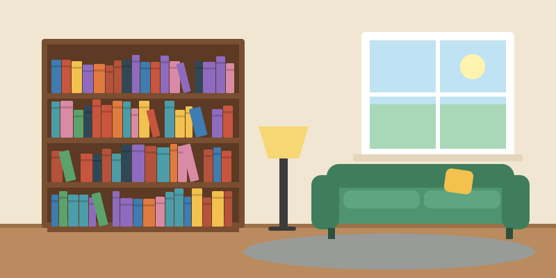

Riverside library adds evening hours and a quiet reading room
Starting next month, the Riverside Public Library will stay open until 9 p.m. on weekdays. The change follows a year of requests from students, shift workers and parents who could only visit after dinner.
Library director Marcus Hale said the longer hours are paid for by a state grant. “People told us the building closed right when they finally had time to use it,” he said. The grant also covers two new staff members for the evening shift.
The first evening opening is planned for December 1. Until then, the library keeps its usual hours, and the second floor stays closed while the new room is finished.

A room built for reading
The second floor now has a quiet room with adjustable lighting, large-print books and two video magnifiers. Staff can also set up a computer with a screen reader on request.
The room seats twelve people and is open to anyone with a library card. Visitors can reserve a table for up to two hours, or simply drop in.
What’s available
- Large-print and audio books
-
Two video magnifiers
- One with a 24-inch screen
- One portable model you can borrow
- Computers with screen readers, set up on request
- Free headphones at the front desk
“It’s the first place in town where I can read for an hour without a headache.”
Ana Ruiz, longtime visitor
Opening hours
| Day | Hours |
|---|---|
| Monday to Thursday | 9 a.m. – 9 p.m. |
| Friday | 9 a.m. – 6 p.m. |
| Saturday | 10 a.m. – 5 p.m. |
| Sunday | Closed |
How to visit
The library is at 210 Water Street, a short walk from the Riverside bus station. Parking is free after 5 p.m. The front entrance has a ramp and automatic doors, and the elevator reaches every floor.
Questions about the new hours can go to the front desk at (555) 010-0142 or help@library.example.